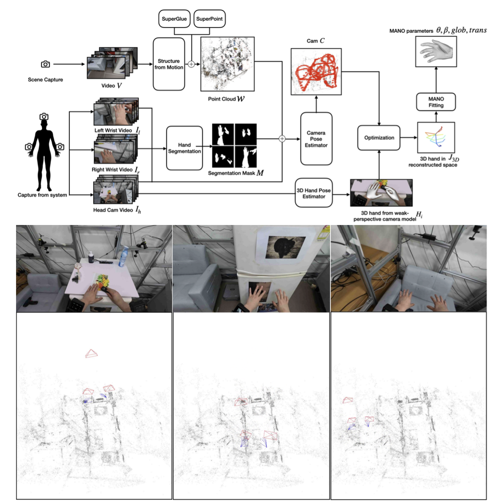

|
Yonwoo Choi I'm currently fulfilling my alternative military service as an AI Research Engineer at CUBOX where I work in a small team working on 3D Computer Vision. Previously I was fortunate to be a member of the Visual Computing Lab led by Hanbyul Joo.
|

|
ResearchI'm interested in computer vision, deep learning, generative AI, and image processing. Most of my research is about 3D computer vision, especially pose estimation and reconstruction. |
|

|
A Wrist Mounted Camera System for Hand Pose Estimation from Single RGB Images
Yonwoo Choi, Hanbyul Joo MS Thesis, Computer Science and Engineering, Seoul National University, 2024 project page / video / arXiv Hand Motion Capture System for 3D Hand Pose Estimation. |
Basically
|
Squareplus: A Softplus-Like Algebraic Rectifier
A Convenient Generalization of Schlick's Bias and Gain Functions Continuously Differentiable Exponential Linear Units Scholars & Big Models: How Can Academics Adapt? |
|
Template from John Barron. |